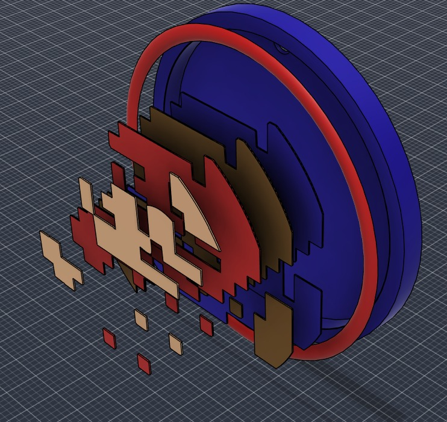
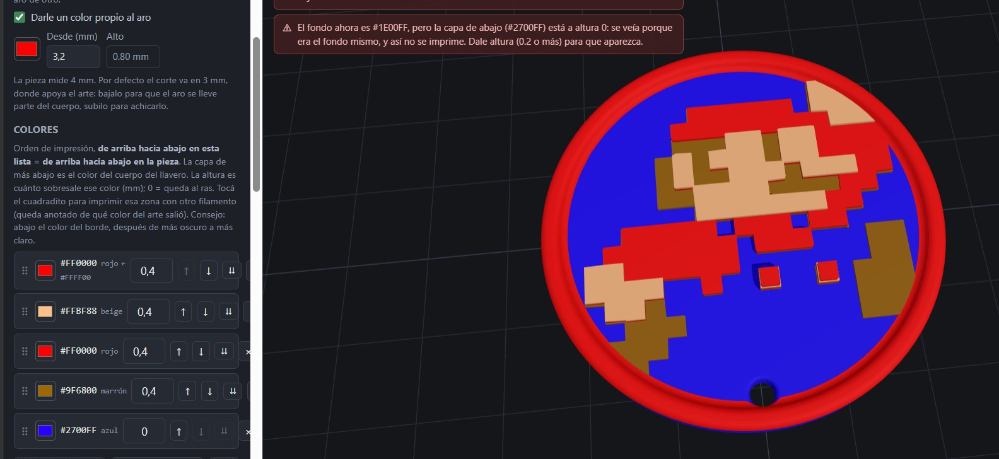
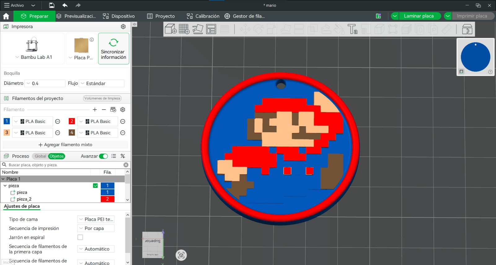

Artwork in. Print-ready multicolor file out. No CAD in between.
I build the software that removes manual modelling from custom 3D-printed product orders — parametric generators, image-to-geometry pipelines and print-ready file export.

The bottleneck this removes
Every shop selling personalised printed products hits the same wall: the order arrives as a picture, and the printer needs geometry. Somebody bridges that gap by hand, once per order.
- Clean up the customer artwork Flatten gradients, fix outlines, decide what survives at nozzle width.
- Trace it into vectors One clean path set per colour region, in Illustrator or Inkscape.
- Rebuild it as solids in CAD Import, extrude and stack every region so no colour floats in mid-air.
- Export and hope it slices Separate meshes with mismatched origins, reassembled by hand in the slicer.
TokenGen: the pipeline, end to end
A desktop tool that runs fully offline. It takes a flat image or SVG and produces a multi-part 3MF that an AMS or MMU slicer opens with one filament already assigned per part.
- Colour separation Quantises the image into flat regions, one mask per colour, with denoise and speckle controls for photographs.
- Per-mask vectorisation Each mask is traced separately, which keeps the layer count deterministic and controllable.
- Cumulative stacking The footprint extruded at each level is that colour plus every colour above it, so each layer physically rests on the one below.
- Parametric base Outline, thickness, hole, bevel, safe area and relief ceiling are all inputs. Bases can be drawn as SVG or measured automatically from an STL or 3MF.
- Print-ready export Multi-part 3MF, one STL per colour as a fallback, and a top-view preview. Plus grams per colour and the filament-swap count for a single-extruder printer.
What it looks like in use


It catches the failures before the printer does
Built on
Python, with shapely for the 2D boolean work, vtracer for vectorisation, trimesh and mapbox_earcut for extrusion, and a hand-written 3MF exporter. The interface is a local server with a Three.js viewer, so nothing leaves the machine. The geometric invariants — every layer fully supported, heights chaining without gaps, every mesh watertight with consistent normals — are covered by an automated test suite.
- Python
- shapely
- trimesh
- vtracer
- numpy
- Pillow
- 3MF
- Three.js
- OpenSCAD-WASM
- Fusion 360
HEXBOARD
The same idea in the browser: a parametric configurator where the customer sets the dimensions and the geometry is generated live with OpenSCAD-WASM, then downloaded as a printable model. No server, no CAD seat, no designer in the loop.
If your team designs each custom order by hand, that step can be code.
I work with print farms, personalised-product shops and configurator teams — building the generator, integrating it with the order flow, or licensing an existing pipeline. Tell me what your current per-order process looks like and I'll tell you what can be automated.
dantebonessi14@gmail.com